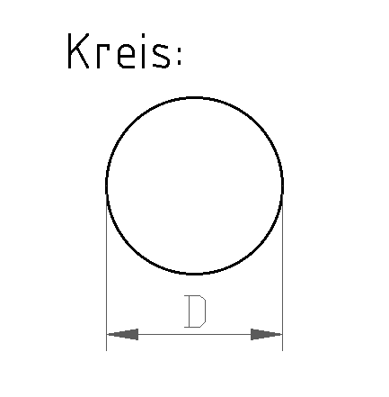

2 Kreisfläche
Zuerst die Pflicht-Aufgaben (★, ★★). Die Extra-Aufgaben (★★★) am Ende sind freiwillig.
Tippe in die Kästchen. Dann tippe auf „Prüfen“.
Grün = richtig, Rot = schau noch einmal.

A = Fläche (alles, was innen im Kreis liegt)
D = Durchmesser, R = Radius (halber Durchmesser)
A = D² · π4
Radius: R = D : 2
Umfang: U = D · π
Beispiel: D = 20 mm → A = 20 · 20 · π : 4 = 314 mm². Nimm den Taschenrechner. Runde auf 2 Kommastellen (mehr Stellen gehen auch).
So tippst du am Taschenrechner:
π = Taste π (am Handy oft unter „wissenschaftlich“ oder beim Drehen ins Querformat). Kein π? Nimm 3,14.
√ = Taste √, dann eine Klammer: √(56 · 4 : π)
Hoch 2 = Taste x² oder die Zahl zweimal malnehmen.
Aufgabe 1 ★

Gegeben: D = 42 mm
Rechne zuerst in mm. Dann rechne in die gefragte Einheit um.
mm → cm ist : 10. mm² → cm² ist : 100. mm → dm ist : 100.
| Radius R = | mm |
| : 10 = | cm |
| Kreisfläche A = | mm² |
| : 100 = | cm² |
| Umfang U = | mm |
| : 100 = | dm |
Aufgabe 2 ★★
Der Durchmesser ist 32 cm. Berechne die fehlenden Werte. Achte auf die Einheiten!
Für den Radius in mm: 32 cm = 320 mm. Für die Fläche rechne mit 32 cm, dann bekommst du cm². Für den Umfang: cm → dm ist : 10.
| Radius R = | mm |
| Fläche A = | cm² |
| Umfang U = | cm |
| : 10 = | dm |
Extra: Wenn du noch Zeit hast ★★★
Pflicht geschafft! Du darfst hier aufhören.
Diese Aufgaben sind freiwillig. Hier wechseln die Einheiten oft.
Aufgabe 3 ★★★
Jetzt ist der Umfang gegeben: U = 88 cm. Rechne Schritt für Schritt.
Durchmesser aus dem Umfang:
D = U : π
| 1. Durchmesser D = 88 : π = | cm |
| 2. Radius R = D : 2 = | cm |
| 3. Fläche A = D² · π : 4 = | cm² |
Aufgabe 4 ★★★
Der Radius ist 314 mm. Berechne die fehlenden Werte. Achte auf die Einheiten!
| Durchmesser D | Radius R | Fläche A | Umfang U |
|---|---|---|---|
| dm | 314 mm | cm² | m |
Aufgabe 5 ★★★
Jetzt ist die Fläche gegeben. Berechne die fehlenden Werte.
Durchmesser aus der Fläche:
D = √(A · 4 : π)
| Durchmesser D | Radius R | Fläche A | Umfang U |
|---|---|---|---|
| cm | mm | 56 cm² | mm |
Aufgabe 6 ★★★
Der Umfang ist 0,072 m. Berechne die fehlenden Werte.
| Durchmesser D | Radius R | Fläche A | Umfang U |
|---|---|---|---|
| mm | cm | cm² | 0,072 m |